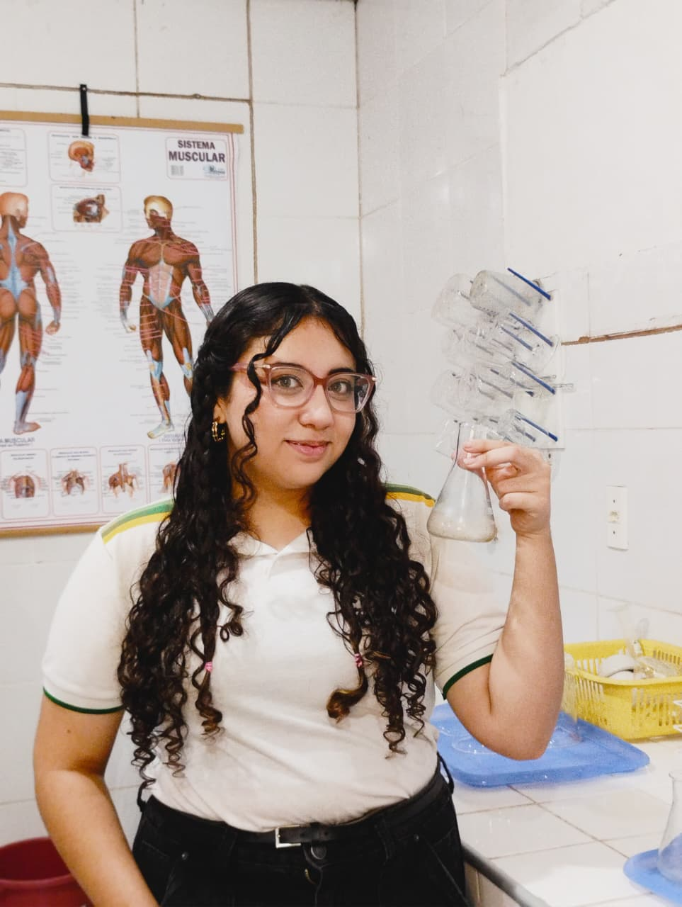

Learning & Creativity
Exploring questions and using creative work to give ideas a form others can engage with.
Academic Portfolio
I'm interested in how ideas take shape through learning, creativity, and meaningful experiences. I believe that curiosity is more than simply asking questions; it is about exploring possibilities, challenging perspectives, and finding ways to turn ideas into action.
Through academic projects, leadership, and community initiatives, I've discovered how collaboration and a willingness to make a difference can create opportunities and bring people together.

Exploring questions and using creative work to give ideas a form others can engage with.
Exploring how listening, shared responsibility, and collaboration can contribute to social impact.